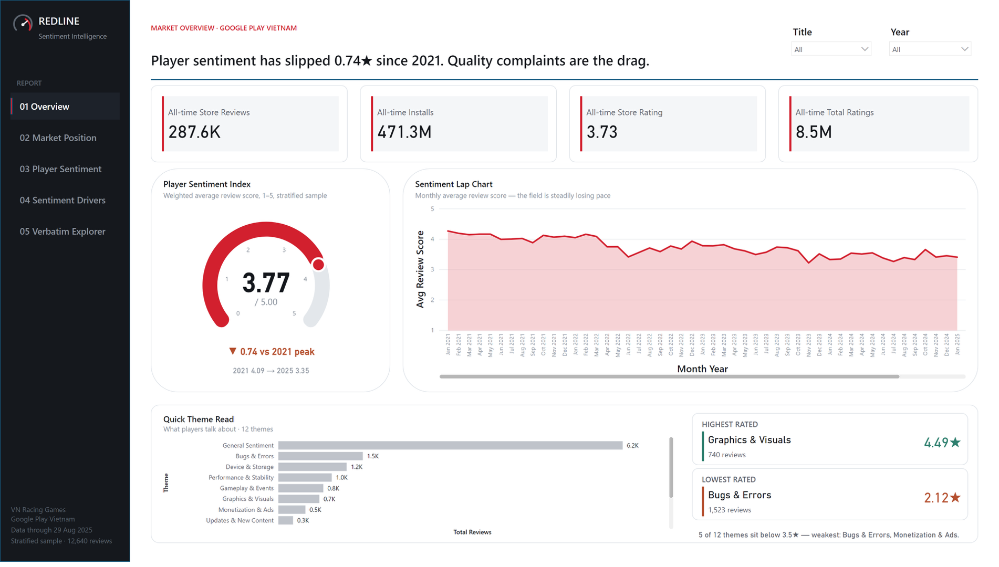
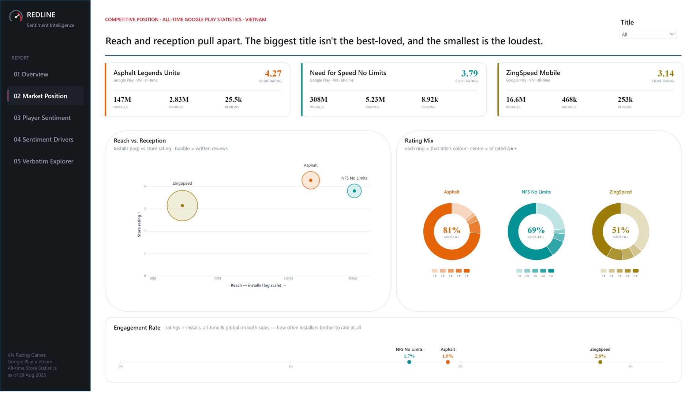
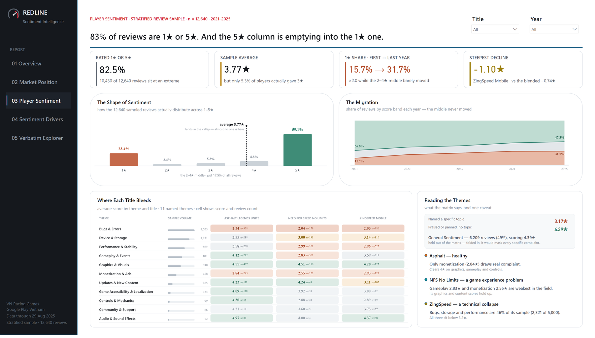
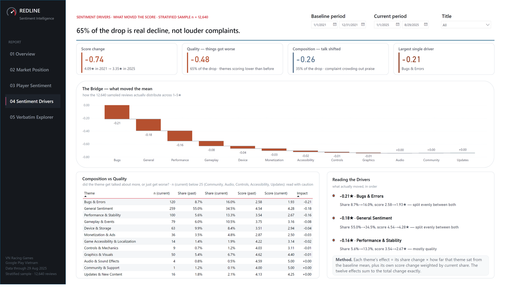
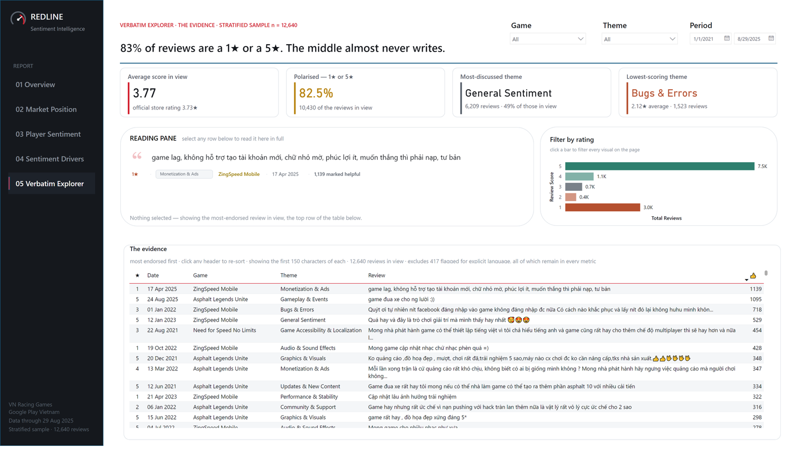

Project · REDLINE
Player sentiment slipped 0.74★ in four years. Which part was real?
Three mobile racing games, 12,640 classified Google Play reviews, and one question a trend line can't answer: when a rating falls, is the product getting worse or are the complainers just getting louder?
- Report
- REDLINE — sentiment intelligence, five pages
- Role
- Sole build — scraping, modelling, classification, report
- Source
- Google Play reviews, Vietnam, public
- Sample
- 12,640 reviews — stratified by month × score
- Period
- Jan 2021 – Aug 2025
- Language
- Vietnamese
- Method
- SetFit few-shot classification, multilingual base, 12 themes
- Stack
- Python, Power BI, DAX, Deneb/Vega
- Titles
- Asphalt Legends Unite · Need for Speed No Limits · ZingSpeed Mobile
- Code
- Fully open — notebook, data and .pbix on GitHub
The report
Interactive — start on Overview, then follow the tabs. Open full screen → Download as PDF
The question
A store rating tells you a game is sliding. It won't tell you why, and it won't tell you which of two very different problems you have: the game genuinely got worse, or the mix of who bothers to review shifted toward complaint. Those need opposite responses, and a trend line can't separate them. Review text can — but at hundreds of thousands of reviews nobody reads it, and a word cloud isn't an answer.
REDLINE is built to get from a rating movement to a specific, attributable cause, and then down to the raw player quotes behind it.
Overview — the thesis stated up front

The page opens on the conclusion rather than making the reader assemble it: sentiment has slipped 0.74★ since 2021, and quality complaints, not content, are the drag. Everything after it is the evidence for that one line. The sentiment index sits at 3.77 against a 4.09 peak; five of twelve themes score below 3.5★, and they're the technical ones — bugs, performance, storage, monetisation.
Market position — reach and reception pull apart

Each title occupies a distinct spot: Asphalt rates highest (4.27) on the smaller reach, NFS has the largest install base (308M) at a middling 3.79, and ZingSpeed rates worst (3.14) but is by far the loudest. That last point needs a caveat rather than a conclusion, and it's the one methodological trap on the whole project — see below.
Player sentiment — the shape of the decline

Sentiment here isn't normally distributed — 82.5% of reviews sit at 1★ or 5★ and almost nobody lands in the middle, so an average is close to meaningless on its own. What moves is the mix: the 1★ share doubles from 15.7% to 31.7% while the 2–4★ middle barely changes. The story is 5★ reviews migrating to 1★, not a gentle slide.
The theme-by-title matrix is where each game's problem localises. Asphalt is healthy — only monetisation (2.84★) draws real complaint. NFS has a game-experience problem — gameplay and monetisation are its weakest. ZingSpeed is a technical collapse, with bugs, storage and performance making up 46% of its sample.
Sentiment drivers

This is the analytical core. The −0.74★ is decomposed two ways at once. First, quality versus composition: 65% of the drop (−0.48) is themes actually scoring lower than before, and 35% (−0.26) is the conversation shifting — complaint crowding out praise. That single split is the answer to the opening question, and it says the decline is mostly real, not mostly noise.
Second, a bridge attributes the movement to individual themes, and the twelve effects sum to the total change exactly. Bugs & Errors is the largest single driver at −0.21★, both talked about more (share 8.7%→16.0%) and scored worse (2.58→1.93★). Each theme's effect is its share change times its distance from the baseline mean, plus its own score change weighted by current share. That the parts reconcile to the whole is the property that makes the page trustworthy rather than suggestive.
Several themes carry fewer than 25 reviews in the current period — the report flags those inline and says to read them with caution, rather than quietly letting a thin cell drive a conclusion.
Verbatim explorer — down to the evidence

The last page closes the loop from aggregate back to source. Reviews are ranked by how many players marked them helpful, filterable by rating and theme, readable in full in the original Vietnamese. An analysis of review text that you can't trace back to review text is just a claim; this is the part that lets someone check mine.
417 reviews flagged for explicit language are suppressed from the readable table but remain in every metric — hidden from display, never dropped from the maths.
How it's built
A Python notebook scrapes the Vietnamese-language review history for all three titles, then draws a stratified sample by month and star rating so each title's sample mirrors its own distribution over time. Reviews are classified into twelve themes with SetFit — few-shot classification that fine-tunes a multilingual sentence transformer on around 1,000 hand-labelled examples. Few-shot was the right trade: labelling a thousand reviews is an afternoon, and zero-shot on informal, code-switched Vietnamese wasn't accurate enough to publish a number from.
The Power BI rebuild was done with Claude Code driving Power BI Desktop through its modelling bridge — model cleanup, DAX, and report build under my direction, with the analytical decisions and the design standard mine. The full setup is documented in the repo. setup guide.
Reading it correctly — two rules
- Compare percentages within a title, never counts across titles. The sample is a fixed sample size per game, so absolute theme counts between games are an artifact of the sampling, not the data. The month × score stratification means a title's own theme percentages are faithful; that's what's safe to compare.
- ZingSpeed's loudness is a filter effect, not a behaviour. Scraping is Vietnamese-only. ZingSpeed is a local title whose players are almost all Vietnamese, so nearly all its reviews are captured; Asphalt and NFS are global games whose Vietnamese reviews are a slice of a much larger whole.
Limitations
- One theme per review. The classifier assigns a single dominant theme, but real reviews are mixed — “great graphics, terrible lag” is one review with two opinions. Aspect-based sentiment analysis would split them, and it's the clear next step.
- Directional, not precise. Roughly 100–200 reviews per title per quarter supports reading a direction, not quoting a figure to the decimal. The drivers page flags thin cells for this reason.
- Reviewers aren't players. People who write reviews self-select to the extremes — the 82.5% sitting at 1★ or 5★ is that effect in the data. This measures the vocal end of each community.
Everything is open
Public data, no client involvement, nothing withheld: the scraping and classification
notebook, the raw extract, the .pbix with the full model and every measure, and
the live report.
Repository on GitHub →
Independent portfolio exercise using publicly available Google Play data. Analysis is for demonstration only and does not represent the views of Gameloft SE, VNG Corporation or Electronic Arts.